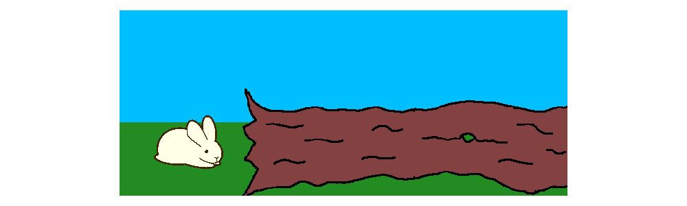

Control of traveling waves in adaptive neural fields
Comprehensive Exam
Sage Shaw - April 4th, 2023
Outline
- Neural field model
- Traveling wave solutions
- The wave response
- Entrainment
- Future work
Neural Field Model

Image courtesy of Heather Cihak.
Retinotopic Map
- Primary visual area (V1)
- Sensory areas have spatially organized topologies

Neural Field Models
- Organize neural populations on a line
- Connectivity is determined by distance
- Extend to a continuum limit

1D Neural Fields

- Progressive fronts
- Regressive fronts
- Pulses
2D Neural Fields
Synaptic Depression
Rapid firing depletes pre-synaptic resources.
Model
\begin{align*} \tau_u \frac{\partial}{\partial t}\underbrace{u(x,t)}_{\text{Activity}} &= -u + \underbrace{\overbrace{w}^{\substack{\text{conectivity}\\\text{kernel}}} \ast \big( q f[u] \big)}_{\substack{\text{network}\\\text{stimulation}}} \\ \tau_q \frac{\partial}{\partial t}\underbrace{q(x,t)}_{\substack{\text{Synaptic}\\\text{Efficacy}}} &= 1 - q - \underbrace{\beta}_{\substack{\text{rate of}\\\text{depletion}}} q \underbrace{f(u)}_{\substack{\text{firing-rate}\\\text{function}}} \end{align*}
Model

- $f[u] = H(u - \theta)$
- All or nothing firing-rate function.
- $w(|x-y|) = \frac{1}{2}e^{-|x-y|}$
- network connectivity kernel
Traveling wave solutions
Front solutions
- $\xi = x - ct$
- Active region: $(-\infty, 0)$
- Restrict to $c > 0$
- Linearizes equations
- Decouples $q$ from $u$
- $U(-\infty) = \gamma > \theta$
$$ \theta = \frac{\gamma + c\tau_q\gamma}{2(1+c\tau_q\gamma)(1+c\tau_u)} $$
Front Bifurcations

- Three solutions for $\theta < \gamma < 2\theta$
- One solution for $2\theta < \gamma$
- $\gamma = 1 \iff \beta = 0$: no depression
Front Bifurcations

Pulse solutions
- $\xi = x - ct$
- Active region: $(-\Delta, 0)$
- Linearizes equations
- Decouples $q$ from $u$

Two consistency equations for $c$ and $\Delta$.
Pulse Bifurcations

Wave response
Correcting Possition
- Position encoded as a pules
- Must be corrected
Spatially homogeneous pulse

Aysmptotic Approximation
Add stimulus terms $$ \begin{align*} \tau_u u_t &= -u + w * (q f[u]) + \varepsilon I_u(x, t) \label{eqn:forced_u} \\ \tau_q q_t &= 1 - q - \beta q f[u] + \varepsilon I_q(x, t). \label{eqn:forced_q} \end{align*} $$substitute with the expansion $$ \begin{align*} u(\xi, t) &= U\big( \xi - \varepsilon \nu(t) \big) + \varepsilon \phi + \mathcal{O}(\varepsilon^2) \\ q(\xi, t) &= Q\big( \xi - \varepsilon \nu(t) \big) + \varepsilon \psi + \mathcal{O}(\varepsilon^2) \end{align*} $$
Collect the $\mathcal{O}(\varepsilon)$ terms
$$\begin{align*} \underbrace{\begin{bmatrix}\tau_u & 0 \\ 0 & \tau_q\end{bmatrix}}_{T} \begin{bmatrix}\phi \\ \psi \end{bmatrix}_t + \mathcal{L}\begin{bmatrix}\phi \\ \psi \end{bmatrix} &= \begin{bmatrix} I_u + \tau_u U' \nu' \\ I_q + \tau_q Q' \nu ' \end{bmatrix} \end{align*}$$ $$ \mathcal{L}(\vec{v}) = \vec{v} - cT \vec{v} + \begin{bmatrix} -w Q f'(U) * \cdot & -w f(U) * \cdot \\ \beta Q f'(U) & \beta f(U) \end{bmatrix} \vec{v} $$Bounded solutions exist if the inhomogeneity is orthogonal to $\mathcal{N}\{\mathcal{L^*}\}$. For $(v_1, v_2) \in \mathcal{N}\{\mathcal{L^*}\}$ $$\begin{align*} -c \tau_u v_1' &= v_1 - Qf'(U) \int w(y,\xi) v_1(y) \ dy + \beta Qf'(U) v_2 \\ -c \tau_q v_2' &= v_2 - f(U) \int w(y, \xi) v_1(y) \ dy + \beta f(U) v_2. \end{align*}$$
Wave response function
$$ \nu(t) = - \frac{\int_\mathbb{R} v_1 \int_0^t I_u(\xi, \tau) \ d\tau + v_2 \int_0^t I_q(\xi, \tau) \ d\tau \ d\xi}{\int_\mathbb{R} \tau_u U' v_1 + \tau_q Q' v_2 \ d\xi} $$Spatially Homogenious Pulse
$$ \varepsilon I_u = \varepsilon \delta(t - 1) $$

Spatially localized pulse

Spatially localized pulse


Entrainment


Future work
Spreading Depression

Zandt, Haken, van Putten, and Markus (2015)
Retinotopic Map

Zandt, Haken, van Putten, and Markus (2015)
Scintilating Scotoma


Reaction Diffusion Model
$$\begin{align*} u_t &= \underbrace{u - \frac{1}{3}u^3}_{\text{excitable}} - \underbrace{v}_{\text{recovery}} + \underbrace{D\nabla^2 u}_{\text{Diffusion}} \\ \frac{1}{\varepsilon} v_t &= u + \beta + \underbrace{K\int H(u) d \Omega}_{\substack{\text{neurovascular}\\\text{feedback}}} \end{align*}$$
Markus A. Dahlem (2013)
Coupled neural field and diffusion equation
$$\begin{align*} v_t &= -v + w \ast s_p(v, k) + g_v \\ k_t &= \delta k_{xx} + g_k(s, s_p, a, b) + I \end{align*}$$- Neural field model
- Coupled potassium concentration
- Models both ignition and propagation of CSD
Reaction Diffusion on surfaces
$$\begin{align*} u_t &= 3u - u^3 - v + D \Delta_{\mathcal{M}}u \\ \frac{1}{\varepsilon} v_t &= u + \beta + K \int_{\mathcal{M}} H(u) \ d \mu_{\mathcal{M}} \end{align*}$$
- Surface operators: $\Delta_{\mathcal{M}}, \int_{\mathcal{M}} \cdot d \mu_{\mathcal{M}}$
- Affects speed and stability of waves
A Turring Reaction Diffusion System using RBFs
$$\begin{align*} u_t &= \delta_u \Delta_{\mathcal{M}} u + \alpha(1-\tau_1 v^2) + v(1-\tau_2 u)\\ v_t &= \delta_v \Delta_{\mathcal{M}} v + \beta(1-\frac{\alpha\tau_1}{\beta} uv) + u(\gamma-\tau_2 v)\\ \end{align*}$$A Turring Reaction Diffusion System using RBFs
Thank you